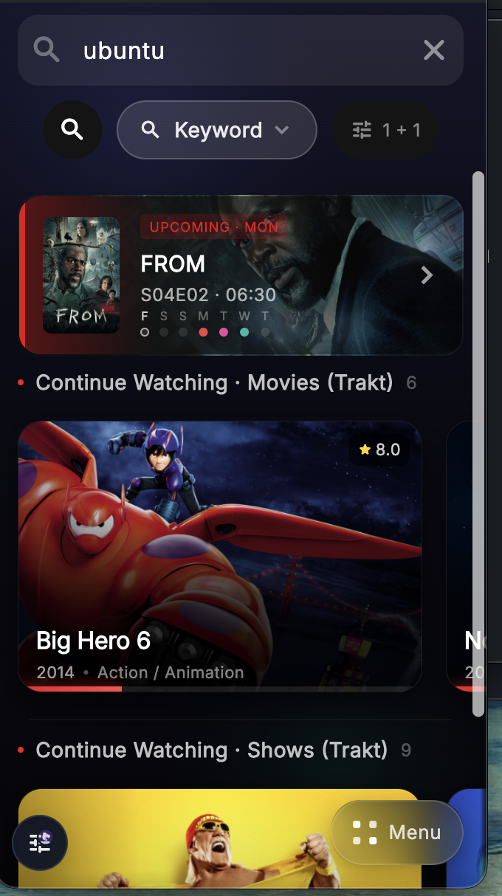
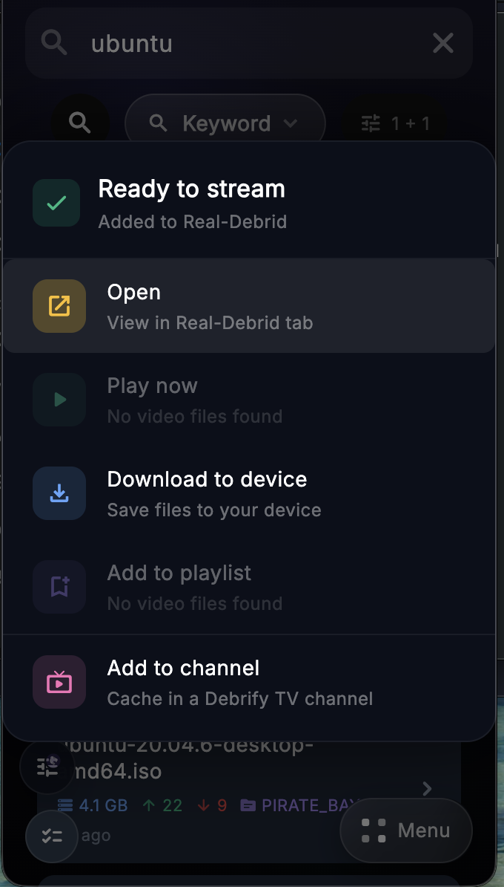
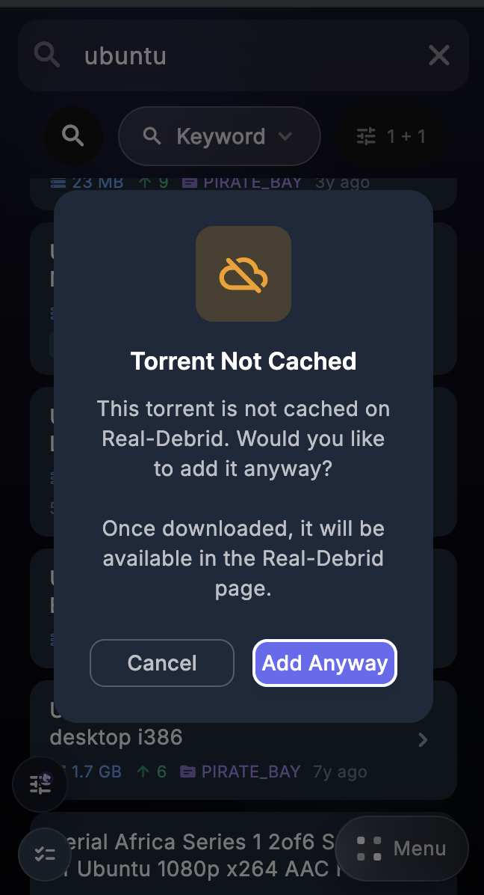

The Flow
Minimal steps, with the exact screenshots from the app flow.
Start in Keyword mode
Enter what you want to find, then make sure the search mode is set to Keyword. This is the fastest option when you already know the file or title you want.

Browse the result list
Select the result you want, then add it to your selected cloud provider. You can also sort or filter results before choosing one.
If the torrent is cached
If the torrent is already cached in your selected provider, Debrify shows the available actions right away.

If the torrent is not cached
If the torrent is not already cached, Debrify will ask if you want to add it anyway. Choose Add Anyway. Once the transfer finishes, the item will appear in that provider tab.

Keyword search is best when you already know what you want: search for it, pick a result, add it to your provider, then open, play, or download it.